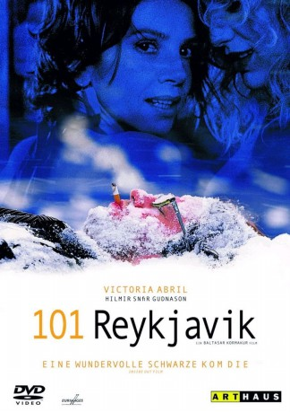

#10690 101 Reykjavik
 
 IMDB-Wertung: 6.9 / 10
IMDB-Wertung: 6.9 / 10  Metascore: 68
Metascore: 68 
Parties, Alkohol und jede Nacht mit einer anderen Frau ins Bett... Hlynurs einzige und wahre Leidenschaft ist das süße Nichtstun. Ein eigenes Apartment oder gar Jobsuche bereiten ihm viel zuviel Stress. Hlynur fühlt sich einfach wohl bei Mama. Als Lola dort auftaucht, gerät sein Dolce Vita allerdings gehörig ins Wanken. Die temperamentvolle Spanierin fordert ihn heraus. Hlynur soll sich am Riemen reißen und sein Leben endlich selbst in die Hand nehmen. Doch als sie eines Abends mit ihm um die Häuser zieht, erliegt selbst die widerspenstige Lola Hlynurs Charme. Ein One-Night-Stand mit Folgen. Lola ist schwanger. Doch das ist noch lange nicht alles. Als sie ihm eröffnet, dass seine Mutter und sie ein Paar sind und eine Familie gründen wollen, fällt Hlynurs Lebensplanung plötzlich wie ein Kartenhaus zusammen.
Jahr: 2000
Dauer: 84 Minuten
FSK: 16
Land: Island Studio: Kinowelt FilmverleihTonspuren:
Untertitel:
Auflösung: SD (718x552) Größe: 798 MB
Genre: Komödie, Liebe
Regisseur: Baltasar Kormákur
Drehbuch: Hallgrímur Helgason, Baltasar Kormákur
Soundtrack: Damon Albarn, Einar Örn Benediktsson
Darsteller:
- Victoria Abril als Lola
 Hilmir Snær Guðnason als Hlynur Bjorn Hafsteinsson
Hilmir Snær Guðnason als Hlynur Bjorn Hafsteinsson- Baltasar Kormákur als Þröstur
 Ólafur Darri Ólafsson als Marri
Ólafur Darri Ólafsson als Marri- Gudmundur Thorvaldsson als Ellert
- Halla Margrét Jóhannesdóttir als Flamenco nemandi
- Ingvar Þórðarson als Sjúkraliði
- Hanna María Karlsdóttir als Berglind
- Þrúður Vilhjálmsdóttir als Hófí
- Þröstur Leó Gunnarsson als Brúsi
- Eyvindur Erlendsson als Hafsteinn
- Halldóra Björnsdóttir als Elsa
- Hilmar Jonsson als Magnús
- Jóhann Sigurðarson als Páll
- Edda Heidrún Backman als Kona Páls
- Gunnar Eyjólfsson als Nágranni
- Jónína Ólafsdóttir als Kona á Tryggingarm
- Halldór Gylfason als Stöðumælavörður
- Pétur Einarsson als Pabbi Magga
- Ingibjörg Gunnarsdóttir als Mamma Magga
- Berglind Steinarsdóttir als Systir Magga
- Gunnar H. Gunnarsson als Mágur Magga
- Sigríður Helgadóttir als Amma
- Inga Maria Valdimarsdóttir als Vinkona Hófíar
- Agnar Jón Egilsson als Rósi
- Rósi Hattari als Barfluga
- Atli Rafn Sigurðsson als Gulli
- Guðrún María Bjarnadóttir als Ingey
- Lilja Nótt Þórarinsdóttir als Gunna
- Benedikt Ingi Armannsson als Óli
- Monica Abendroth als Kona á Skipper
- Sigurður Pálmi Sigurbjörnsson als Pizzasendill
- Ólafur Evert Ulfsson als Hlynur yngri
- Guðrún Ósk Maríasdóttir als Elsa yngri.
- Ingi Haraldsson als Þröstur yngri
- Steinar V. Ægisson als Marri Yngri
- Óskírö Baröarsdóttir als Kristinn Milagros
- Buörún Helga Tryggvadóttir als Kristinn Milagros
- Tristan Alex Jónsson als Kristinn Milagros
- Jón Pétur Þorsteinsson als Börn í Fjölskylduboði
- Elmar Johnson als Börn í Fjölskylduboði
- Kristín Hrönn Gunnarsdóttir als Börn í Fjölskylduboði
- Lilja Björg Gunnarsdóttir als Börn í Fjölskylduboði
- Fríða Bonnie Andersen als Systir Marra
- Cosimo Heimir F. Einarsson als José
- Sólrún Yngvadóttir als Sunddrottning
- Ragnhildur Guðnadóttir als Kærasti Ellerts
- Konráð Valsson als Sjoppueigandi
- Lísa Kristjánsdóttir als Lesbísk kona á bar
- Katrin Baldursdóttir als Flamenco nemandi
Datei: X:\2000\101 Reykjavik (2000, FSK16, 718x552).mkv seit 22.02.2019
Festplatte: Gemischt-01+Anime
 Es gibt insgesamt 82 Filme in der Gruppe '2000'
Es gibt insgesamt 82 Filme in der Gruppe '2000'